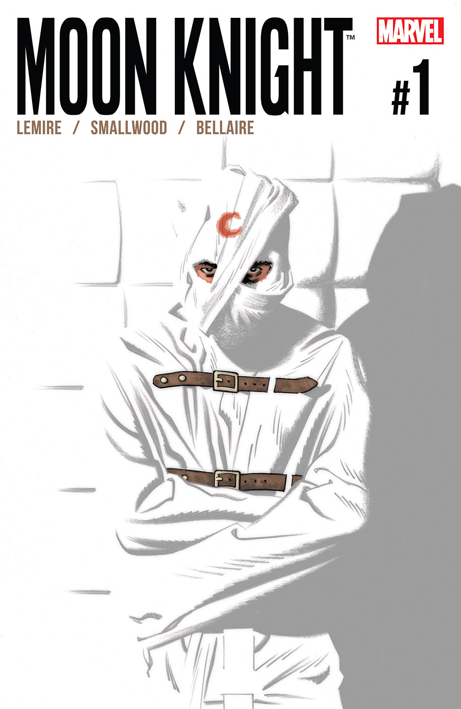
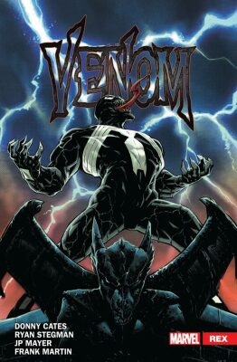
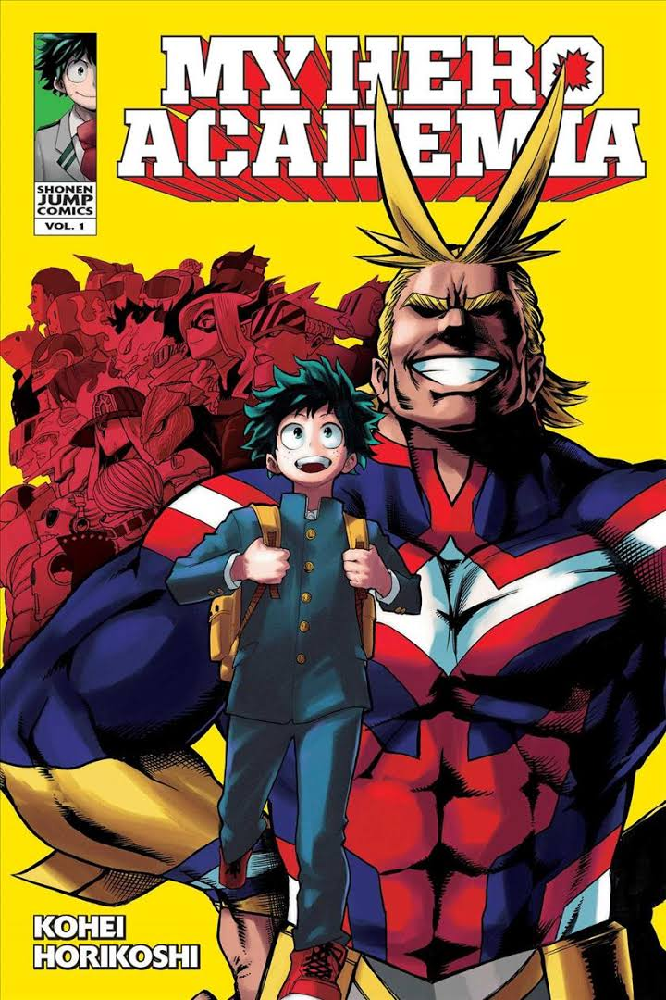
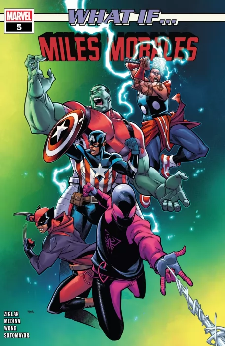

BOOK GALLERY
Moon Knight

Jeff lemire
THE BOOK YOU'D BE INSANE TO MISS! Marc Spector (a.k.a. Moon Knight/Jake Lockley/Steven Grant) has been
fighting criminals and keeping New York City safe for years? or has he? When he wakes up in an insane asylum
with no powers and a lifetime's worth of medical records, his whole identity (indentities) are called into
question. Something is wrong, but is that something Marc Spector himself? Jeff Lemire (EXTRAORDINARY X-MEN)
.
Venom Carnivage

Donny cates
Rising star Donny Cates and blockbuster artist Ryan Stegman transform the world of Venom! An ancient and
primordial evil has surfaced beneath the streets of New York. With it, something equally disturbing has been
awakened in Venom, that most wicked of web-slingers! The symbiote may still be a lethal protector of
innocents in New York, but this never-before-seen threat may force Venom to relinquish everything it holds
dear
My Hero Academia

Kohei Horikoshi
What would the world be like if 80 percent of the population manifested superpowers called "Quirks"? Heroes
and villains would be battling it out everywhere! Being a hero would mean learning to use your power, but
where would you go to study? The Hero Academy of course! But what would you do if you were one of the 20
percent who were born Quirkless? Middle school student Izuku Midoriya wants to be a hero more than anything,
but he hasn't got an ounce of power in him.
King Conan....
.jpg)
Jason Aaron
An old and terrible danger threatens to end King Conan's saga once and for all! Jason Aaron and Mahmud Asrar
return to the saga of Conan - and together they take the Cimmerian futher than has ever been revealed in any
media to date! As Robert E. Howard posited, when King Conan of Aquilonia grows restless on the throne, he
sails west, toward land and adventure unknown.
What If...... ?

John Ridley
What if Miles Morales had never been bitten by a genetically enhanced spider? What if, instead, the U.S.
government recruited, trained, and granted him incredible powers with the Super-Soldier Serum, making him a
friendly neighborhood Captain America? Or perhaps Miles was taken from everything he ever knew -- his
family, his home, his entire life -- and transformed into the immortal weapon of war known as the Wolverine!